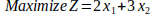
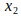
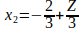

Consider the following objective function for a linear programming model:

(a) Draw a graph that shows the corresponding objective function lines for Z = 6, Z = 12, and Z = 18.
(b) Find the slope-intercept form of the equation for each of these three objective function lines. Compare the slope for these three lines. Also compare the intercept with the  axis.

intercept = - 2/3